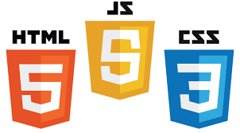
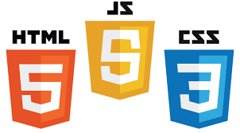
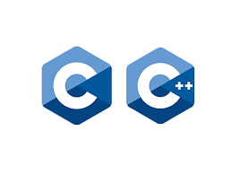
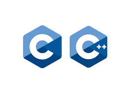

| Code editors |
Lightweight editors for writing and editing code. |
Visual Studio Code, Sublime Text, UltraEdit, Atom, Notepad++ |
| Integrated Development Environments (IDEs) |
IDEs combine a code editor, compiler, debugger, and other features to provide a comprehensive environment for coding. |
JetBrains IDEs (IntelliJ IDEA, PyCharm), Eclipse IDE, NetBeans, Xcode |
| Version Control Systems (VCS) and code collaboration |
Tools for tracking changes, managing repositories, and enabling team collaboration on codebases. |
Git, GitHub, GitLab, Bitbucket, Perforce, Mercurial (See: GitLab vs GitHub) |
| AI coding assistants |
AI assistants offer code suggestions, autocompletion, and aid in writing and debugging code. |
GitHub Copilot, Codeium, Tabnine (See the full list: 17 Best AI-Powered Coding Assistant Tools) |
| Project management |
Tools for organizing tasks, tracking progress, and managing team workflows. |
Jira, Trello, Monday.com, Asana, ClickUp, Microsoft Project |
| Build automation |
These tools automate the process of building and testing code, often used in continuous integration/continuous deployment (CI/CD) pipelines. |
Jenkins, Gradle, Apache Maven, CircleCI, TeamCity, Spacelift |
| Containerization and orchestration tools |
Packaging applications and dependencies for consistent deployment and scalability. |
Docker, Kubernetes, OpenShift, Docker Swarm, Amazon ECS, Rancher |
| Development tools |
Frameworks and tools for building applications and services. |
Node.js, Bootstrap, React, Angular, Vue.js, Ruby on Rails |
| Database management |
Tools to manage databases, perform queries, and visualize data structures and relationships. |
MySQL Workbench, Microsoft SQL Server Management Studio, pgAdmin, Oracle SQL Developer, DBeaver |
| Testing and quality assurance |
Automated testing for unit, integration, and API testing to ensure code quality. |
Selenium, JUnit, Postman, Dynatrace |
| Cloud |
Platforms for scalable computing, storage, and hosting in the cloud. |
AWS, Azure, Google Cloud Platform, IBM Cloud, Oracle Cloud |


 

 
